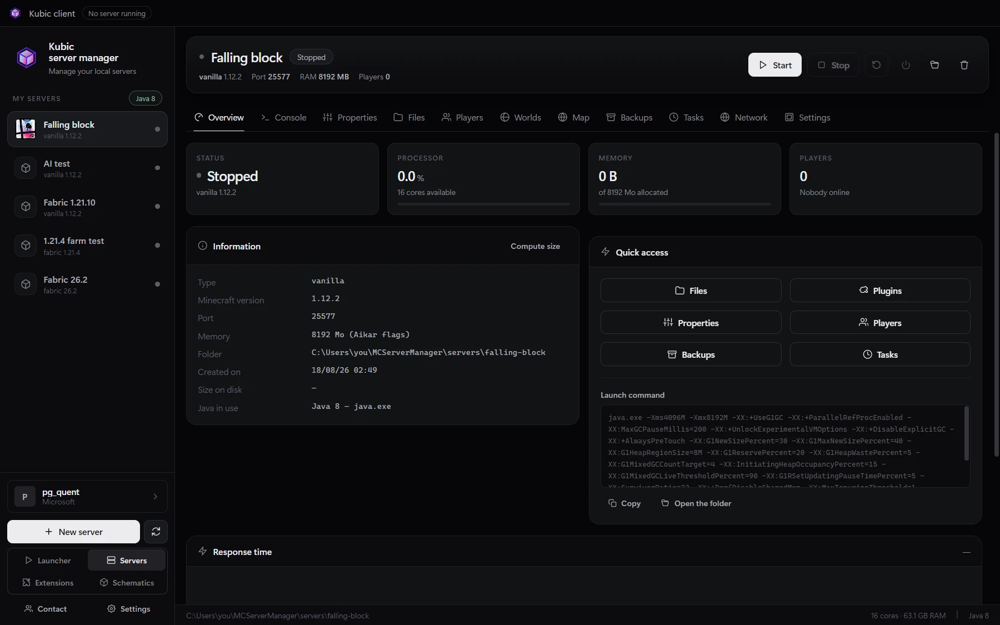
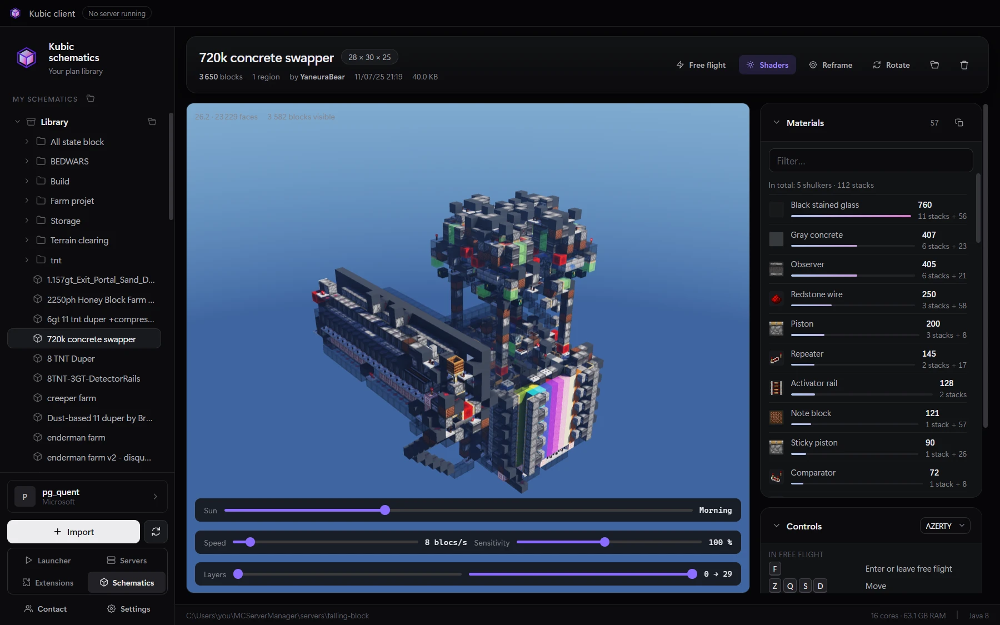
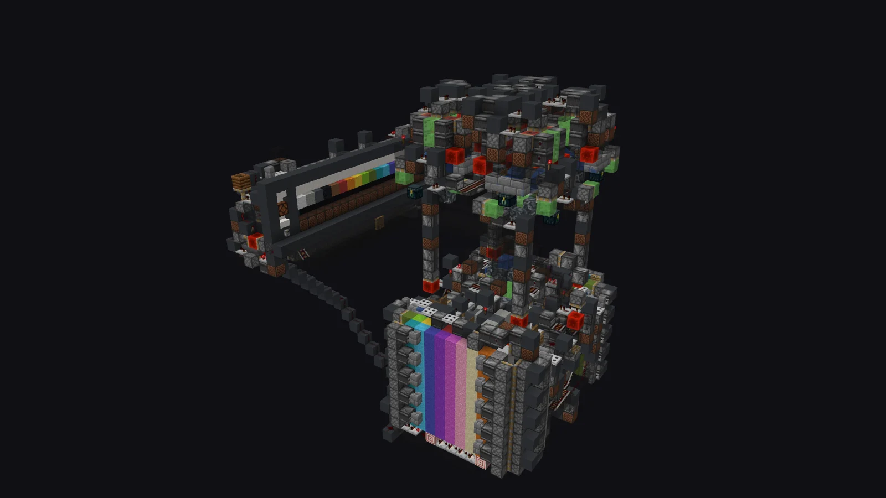
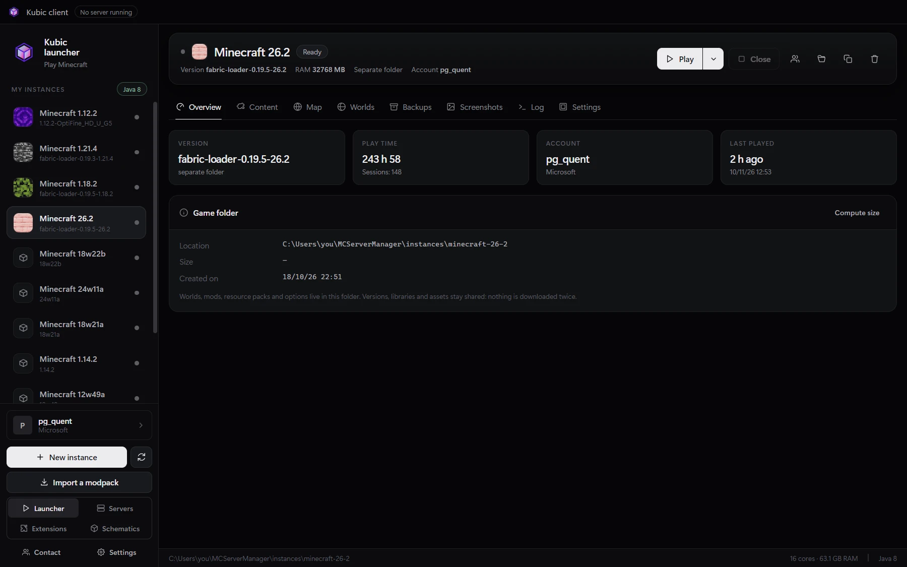

Set up in three steps
Pick the type, the version, the build. The jar is downloaded, the EULA accepted, the folders created, the port and RAM set. Already have a server folder or a modpack? Import it as is.
Minecraft launcher
Enjoy a better game experience with Kubic Client: fast, customisable and packed with features to get the most out of Minecraft.
Free • Lightweight • Secure


A unique experience
With Kubic Client, enjoy a complete, intuitive launcher designed for demanding players.
3D schematic viewer
The Schematics screen opens Litematica, WorldEdit and structure files in real-time 3D, with the game's own models and textures. Below is that screen as it looks in the app — and the 3D view is live: it runs on the app's own engine, right in your browser.
Try it: drag to turn the build, cut it with the layer sliders, or fly through it.

Drag to turn · scroll to zoom · Shift + drag to move Swipe sideways to turn · pinch to zoom
.litematic), WorldEdit / Sponge (.schem) and structure block (.nbt) files.One wizard, three steps, nine server types
Versions and builds fetched live from Mojang, PaperMC, PurpurMC, FabricMC and the Forge and NeoForged Maven repositories. Forge / NeoForge installers are run for you.
Server manager
A dozen tabs per server. What used to take an SFTP client, a text editor and a command window now fits in a single app.
Pick the type, the version, the build. The jar is downloaded, the EULA accepted, the folders created, the port and RAM set. Already have a server folder or a modpack? Import it as is.
Coloured output, filter by text and level, command history on the arrow keys, quick commands, log export.
server.properties, explainedSome 50 keys documented and grouped, with typed controls — checkboxes, sliders, lists. Raw editing of the file is still one click away.
Full browsing, text / JSON / YAML / TOML editing, drag and drop, upload and download, zip and unzip, recursive search, image preview.
A catalogue filtered by the server's loader and version, one-click install with dependencies resolved, enable, disable, local jars welcome.
Operators with their level, whitelist, player and IP bans. Through the console while the server runs, straight in the JSON files otherwise, UUIDs resolved with Mojang.
Activate, rename, duplicate, reset, delete, import a .zip.
The test world and the serious one can finally live side by side.
A top-down map of your world, rendered straight from its region files — no plugin, nothing to install on the server.
Full ZIP archives, worlds only or configuration only, one-click restore and automatic rotation of the oldest ones.
Restart, backup, stop, start, a command or an announcement — at a regular interval, every day or every week.
One port per server, local and public addresses, automatic port opening on your router (UPnP), port test and server ping. More below.
Minimum and maximum RAM, JDK choice, JVM flag presets (Aikar's, basic or your
own), auto-restart after a crash. Closing Kubic sends every server a clean stop.
Play together
The Network tab opens the port on your router by itself, checks that it works, and can give
your server an address that is easy to share — yourname.kubicmc.com — which
follows your IP when it changes.
Player profiles
Click a player to open their profile: inventory, hotbar, armour, offhand, ender chest, health, hunger, experience, game mode, dimension, coordinates, spawn point — and their statistics: play time, deaths, mobs killed, blocks mined.
Launcher
An instance is a version with its own memory, Java, resolution and account. By default it
uses your existing .minecraft: your worlds, mods and options stay where they are.
A separate game folder is one checkbox away.
.mrpack, CurseForge, or a plain .zip of mods. Duplicate mods are flagged, and an instance's mods export as a .zip..schem, .nbt) sorted by version.
Java
Compatibility is a range, not a minimum: a Java that is too recent breaks things as surely as one that is too old. Kubic detects the JDKs you have, picks the one that fits, warns you when none does — and installs the right one in a click.
| Minecraft | Java accepted | Recommended |
|---|---|---|
| ≤ 1.16.5 | 8 to 11 | 8 |
| 1.17.x | 16 + | 17 |
| 1.18 – 1.20.4 | 17 + | 17 |
| 1.20.5 – 1.21.x | 21 + | 21 |
| ≥ 26.1 | 25 + | 25 |
Eclipse Temurin JDKs install from the settings: no Windows installer, no
PATH changed, no registry touched. Each archive is checked against its SHA-256
hash before extraction.
JAVA_HOME, PATH, Program Files, Adoptium, Microsoft, Zulu, Corretto, BellSoft and the official launcher's runtime are all inspected. A runtime installed by Kubic takes precedence over a system JDK of the same version.
Download
For Windows, macOS and Linux. No account, no subscription, no telemetry.
.exe installer · version 1.3.4 ·
116 MB · released 13 November 2026
401d4951767c355d0bf44523e0f72a73978e257fc6fd3dea23dfd961b94cf376
To check the file before running it, compare this hash with the one PowerShell gives you:
Get-FileHash .\Kubic-Setup-1.3.4.exe
Run the downloaded file. Windows SmartScreen may show a warning: More info → Run anyway.
Choose the install folder, then open Kubic.
Create a server or an instance. Any Java it needs installs from the app.
app in a .zip · version 1.3.4 ·
released 13 November 2026
f2c4add17d10624a0266e9f29c5aaf7b5825129d6dc6d8db8114ecc28a83abd5
5fd263e94929c2895fe848432b5d6083766c1542d21c29cbf34a390eeefbcc4e
To check a file, compare its hash with the one Terminal gives you:
shasum -a 256 Kubic-1.3.4-mac-arm64.zip
Open the downloaded .zip, then drag Kubic into your
Applications folder.
Kubic is not signed by Apple, so macOS blocks the first launch — it may even say
the app is damaged. Open Terminal and run this once, then open Kubic as usual:
xattr -dr com.apple.quarantine /Applications/Kubic.app
Create a server or an instance. Any Java it needs installs from the app.
.deb package or .tar.gz archive · version 1.3.4 ·
released 13 November 2026
.deb package3e7428dbdaad093fe3f13ac808b6def09ce31d06fe674d532eb43399de8c7f78
.tar.gz archive, nothing to install4680f76687680564270fafcbdf0e089266fe1120e5c43e4ae317fb626939c60e
To check a file, compare its hash with the one a terminal gives you:
sha256sum Kubic-1.3.4-linux-amd64.deb
Ubuntu, Debian, Mint: open a terminal in your downloads folder and run
sudo apt install ./Kubic-1.3.4-linux-amd64.deb. Kubic then appears with your
applications.
Other distributions: extract the .tar.gz wherever you like, then
run ./kubic.sh from the extracted folder.
Create a server or an instance. Any Java it needs installs from the app.
~/MCServerManager/. Settings in mc-server-manager: under %APPDATA% on Windows, ~/Library/Application Support on macOS, ~/.config on Linux. Both folders can be moved.sudo apt remove kubic, or delete the folder. Your servers and backups are not deleted.Questions
Yes, entirely, under the MIT licence. No account to create, no paid feature, no ads.
To play on public servers in online-mode, yes: you need a Microsoft
account that owns the game. To host and join your own local servers, the offline account is
enough.
Kubic is not signed with a commercial certificate. On Windows, SmartScreen warns about every publisher it does not know yet: click More info, then Run anyway. On macOS, run the Terminal command given in the download section once. To be sure a file is the one we published, compare its SHA-256 hash with the one shown there.
No telemetry, no usage statistics, no crash reports. Your servers, worlds, backups and accounts stay on your PC. Kubic only goes online to download what you ask for (game versions, server jars, mods, Java) and to sign you in with Microsoft. Two optional features go further: a custom address sends its name, your port and a public key to Kubic's service and publishes your IP in DNS; an AI companion on Claude sends its exchanges to Anthropic. Everything is detailed in the privacy notice.
Yes. The Network tab opens the port on your router automatically when it supports
UPnP, and walks you through port forwarding when it does not. It also gives you an address
to share — your public IP, or an optional yourname.kubicmc.com. Kubic does not
host anything for you: the server runs on your PC.
Up to eight at once, each on its own port. You can create as many as you like.
Each server receives a clean stop and the time to write its chunks before
the app closes. Nothing is killed abruptly.
Yes. Import an existing server takes a server folder as it is, downloading
nothing; the Worlds tab imports a .zip; and modpacks import into a server or an
instance.
English, French, Spanish, German, Italian and Portuguese — switch at any time in the settings.
Download Kubic Client now and discover a new way to play Minecraft.